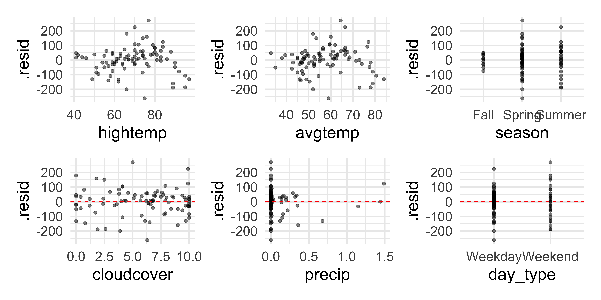
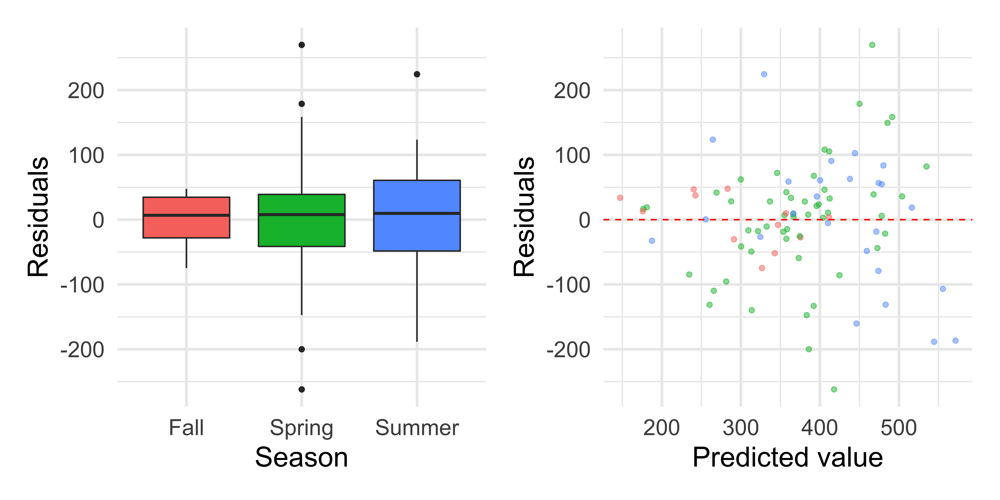
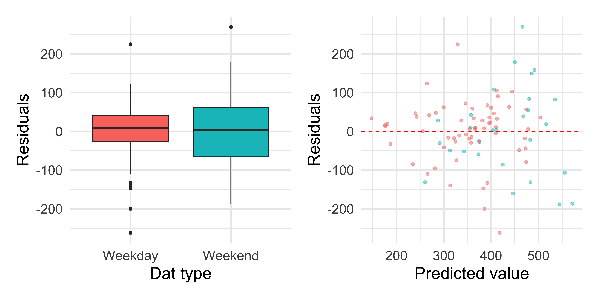

# load packages
library(tidyverse)
library(tidymodels)
library(knitr) # for tables
library(patchwork) # for laying out plots
library(rms) # for vif
# set default theme and larger font size for ggplot2
ggplot2::theme_set(ggplot2::theme_minimal(base_size = 20))MLR: Inference conditions + multicollinearity
STA 210 - Spring 2022
Welcome
Topics
Conditions for inference
Multicollinearity
Computational setup
Data: rail_trail
- The Pioneer Valley Planning Commission (PVPC) collected data for ninety days from April 5, 2005 to November 15, 2005.
- Data collectors set up a laser sensor, with breaks in the laser beam recording when a rail-trail user passed the data collection station.
rail_trail <- read_csv(here::here("slides", "data/rail_trail.csv"))
rail_trail# A tibble: 90 × 7
volume hightemp avgtemp season cloudcover precip day_type
<dbl> <dbl> <dbl> <chr> <dbl> <dbl> <chr>
1 501 83 66.5 Summer 7.60 0 Weekday
2 419 73 61 Summer 6.30 0.290 Weekday
3 397 74 63 Spring 7.5 0.320 Weekday
4 385 95 78 Summer 2.60 0 Weekend
5 200 44 48 Spring 10 0.140 Weekday
6 375 69 61.5 Spring 6.60 0.0200 Weekday
7 417 66 52.5 Spring 2.40 0 Weekday
8 629 66 52 Spring 0 0 Weekend
9 533 80 67.5 Summer 3.80 0 Weekend
10 547 79 62 Summer 4.10 0 Weekday
# … with 80 more rowsSource: Pioneer Valley Planning Commission via the mosaicData package.
Variables
Outcome:
volume estimated number of trail users that day (number of breaks recorded)
Predictors
hightempdaily high temperature (in degrees Fahrenheit)avgtempaverage of daily low and daily high temperature (in degrees Fahrenheit)seasonone of “Fall”, “Spring”, or “Summer”cloudcovermeasure of cloud cover (in oktas)precipmeasure of precipitation (in inches)day_typeone of “weekday” or “weekend”
Conditions for inference
Full model
Including all available predictors
Fit:
rt_full_fit <- linear_reg() %>%
set_engine("lm") %>%
fit(volume ~ ., data = rail_trail). . .
Summarize:
tidy(rt_full_fit)# A tibble: 8 × 5
term estimate std.error statistic p.value
<chr> <dbl> <dbl> <dbl> <dbl>
1 (Intercept) 17.6 76.6 0.230 0.819
2 hightemp 7.07 2.42 2.92 0.00450
3 avgtemp -2.04 3.14 -0.648 0.519
4 seasonSpring 35.9 33.0 1.09 0.280
5 seasonSummer 24.2 52.8 0.457 0.649
6 cloudcover -7.25 3.84 -1.89 0.0627
7 precip -95.7 42.6 -2.25 0.0273
8 day_typeWeekend 35.9 22.4 1.60 0.113 . . .
Augment:
rt_full_aug <- augment(rt_full_fit$fit)Model conditions
Linearity: There is a linear relationship between the response and predictor variables.
Constant Variance: The variability about the least squares line is generally constant.
Normality: The distribution of the residuals is approximately normal.
Independence: The residuals are independent from each other.
Residuals vs. predicted values
ggplot(data = rt_full_aug, aes(x = .fitted, y = .resid)) +
geom_point(alpha = 0.5) +
geom_hline(yintercept = 0, color = "red", linetype = "dashed") +
labs(x = "Predicted values", y = "Residuals")
Linearity: Residuals vs. predicted
Does the linearity condition appear to be met?

Linearity: Residuals vs. predicted
If there is some pattern in the plot of residuals vs. predicted values, you can look at individual plots of residuals vs. each predictor to try to identify the issue.
Linearity: Residuals vs. each predictor

Checking linearity
The plot of residuals vs. predicted shows a fan shaped pattern
The plots of residuals vs. high and low temperature also shows a similar pattern and vs. precipitation does not show a random scatter
The linearity condition is not satisfied.
Checking constant variance
Does the constant variance condition appear to be satisfied?

Checking constant variance
The vertical spread of the residuals is not constant across the plot.
The constant variance condition is not satisfied.
Checking normality

Overlaying a density plot on a histogram
Ex 3. Recreate the following visualization in R based on the results of the model.

Checking independence
We can often check the independence condition based on the context of the data and how the observations were collected.
If the data were collected in a particular order, examine a scatterplot of the residuals versus order in which the data were collected.
If there is a grouping variable lurking in the background, check the residuals based on that grouping variable.
Checking independence
Residuals vs. order of data collection:
ggplot(rt_full_aug, aes(y = .resid, x = 1:nrow(rt_full_aug))) +
geom_point() +
labs(x = "Order of data collection", y = "Residuals")
Checking independence
Residuals vs. predicted values by season:

Checking independence
Residuals vs. predicted values by day_type:

Checking independence
No clear pattern in the residuals vs. order of data collection plot and the model predicts similarly for seasons and day types. Independence condition appears to be satisfied, as far as we can evaluate it.
Multicollinearity
Why multicollinearity is a problem
We can’t include two variables that have a perfect linear association with each other
If we did so, we could not find unique estimates for the model coefficients
Example
Suppose the true population regression equation is \(y = 3 + 4x\)
- Suppose we try estimating that equation using a model with variables \(x\) and \(z = x/10\)
\[ \begin{aligned}\hat{y}&= \hat{\beta}_0 + \hat{\beta}_1x + \hat{\beta}_2z\\ &= \hat{\beta}_0 + \hat{\beta}_1x + \hat{\beta}_2\frac{x}{10}\\ &= \hat{\beta}_0 + \bigg(\hat{\beta}_1 + \frac{\hat{\beta}_2}{10}\bigg)x \end{aligned} \]
Example
\[\hat{y} = \hat{\beta}_0 + \bigg(\hat{\beta}_1 + \frac{\hat{\beta}_2}{10}\bigg)x\]
We can set \(\hat{\beta}_1\) and \(\hat{\beta}_2\) to any two numbers such that \(\hat{\beta}_1 + \frac{\hat{\beta}_2}{10} = 4\)
Therefore, we are unable to choose the “best” combination of \(\hat{\beta}_1\) and \(\hat{\beta}_2\)
Why multicollinearity is a problem
When we have almost perfect collinearities (i.e. highly correlated predictor variables), the standard errors for our regression coefficients inflate
In other words, we lose precision in our estimates of the regression coefficients
This impedes our ability to use the model for inference or prediction
Detecting Multicollinearity
Multicollinearity may occur when… - There are very high correlations \((r > 0.9)\) among two or more predictor variables, especially when the sample size is small
One (or more) predictor variables is an almost perfect linear combination of the others
Include a quadratic in the model mean-centering the variable first
Including interactions between two or more continuous variables
Detecting multicollinearity in the EDA
- Look at a correlation matrix of the predictor variables, including all indicator variables
- Look out for values close to 1 or -1
- Look at a scatterplot matrix of the predictor variables
- Look out for plots that show a relatively linear relationship
Detecting Multicollinearity (VIF)
Variance Inflation Factor (VIF): Measure of multicollinearity in the regression model
\[VIF(\hat{\beta}_j) = \frac{1}{1-R^2_{X_j|X_{-j}}}\]
where \(R^2_{X_j|X_{-j}}\) is the proportion of variation \(X\) that is explained by the linear combination of the other explanatory variables in the model.
Detecting Multicollinearity (VIF)
Typically \(VIF > 10\) indicates concerning multicollinearity - Variables with similar values of VIF are typically the ones correlated with each other
Use the vif() function in the rms R package to calculate VIF
VIF For SAT Model
vif(rt_full_fit$fit) hightemp avgtemp seasonSpring seasonSummer cloudcover
10.259978 13.086175 2.751577 5.841985 1.587485
precip day_typeWeekend
1.295352 1.125741 . . .
hightemp and avgtemp are correlated. We need to remove one of these variables and refit the model.
Model without hightemp
m1 <- linear_reg() %>%
set_engine("lm") %>%
fit(volume ~ . - hightemp, data = rail_trail)
m1 %>%
tidy() %>%
kable(digits = 3)| term | estimate | std.error | statistic | p.value |
|---|---|---|---|---|
| (Intercept) | 76.071 | 77.204 | 0.985 | 0.327 |
| avgtemp | 6.003 | 1.583 | 3.792 | 0.000 |
| seasonSpring | 34.555 | 34.454 | 1.003 | 0.319 |
| seasonSummer | 13.531 | 55.024 | 0.246 | 0.806 |
| cloudcover | -12.807 | 3.488 | -3.672 | 0.000 |
| precip | -110.736 | 44.137 | -2.509 | 0.014 |
| day_typeWeekend | 48.420 | 22.993 | 2.106 | 0.038 |
glance(m1) %>%
select(adj.r.squared, AIC, BIC)# A tibble: 1 × 3
adj.r.squared AIC BIC
<dbl> <dbl> <dbl>
1 0.421 1088. 1108.Model without avgtemp
m2 <- linear_reg() %>%
set_engine("lm") %>%
fit(volume ~ . - avgtemp, data = rail_trail)
m2 %>%
tidy() %>%
kable(digits = 3)| term | estimate | std.error | statistic | p.value |
|---|---|---|---|---|
| (Intercept) | 8.421 | 74.992 | 0.112 | 0.911 |
| hightemp | 5.696 | 1.164 | 4.895 | 0.000 |
| seasonSpring | 31.239 | 32.082 | 0.974 | 0.333 |
| seasonSummer | 9.424 | 47.504 | 0.198 | 0.843 |
| cloudcover | -8.353 | 3.435 | -2.431 | 0.017 |
| precip | -98.904 | 42.137 | -2.347 | 0.021 |
| day_typeWeekend | 37.062 | 22.280 | 1.663 | 0.100 |
glance(m2) %>%
select(adj.r.squared, AIC, BIC)# A tibble: 1 × 3
adj.r.squared AIC BIC
<dbl> <dbl> <dbl>
1 0.473 1079. 1099.Choosing a model
Model with hightemp removed:
| adj.r.squared | AIC | BIC |
|---|---|---|
| 0.42 | 1087.5 | 1107.5 |
Model with avgtemp removed:
| adj.r.squared | AIC | BIC |
|---|---|---|
| 0.47 | 1079.05 | 1099.05 |
Based on Adjusted \(R^2\), AIC, and BIC, the model with avgtemp removed is a better fit. Therefore, we choose to remove avgtemp from the model and leave hightemp in the model to deal with the multicollinearity.
Recap
Conditions for inference
Multicollinearity